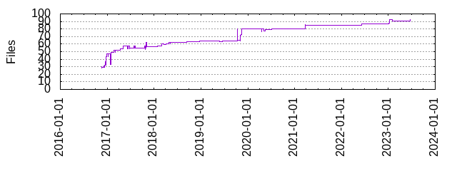

Files
- Total files
- 92
- Total lines
- 23301
- Average file size
- 14770.01 bytes

| Extension | Files (%) | Lines (%) | Lines/file |
|---|
| 9 (9.78%) | 208 (0.89%) | 23 |
| bazel | 1 (1.09%) | 10 (0.04%) | 10 |
| c | 6 (6.52%) | 9330 (40.04%) | 1555 |
| cmake | 1 (1.09%) | 115 (0.49%) | 115 |
| h | 4 (4.35%) | 2685 (11.52%) | 671 |
| in | 1 (1.09%) | 3 (0.01%) | 3 |
| jpg | 1 (1.09%) | 964 (4.14%) | 964 |
| json | 2 (2.17%) | 20 (0.09%) | 10 |
| lock | 1 (1.09%) | 118 (0.51%) | 118 |
| md | 4 (4.35%) | 902 (3.87%) | 225 |
| modulemap | 1 (1.09%) | 3 (0.01%) | 3 |
| pbxproj | 1 (1.09%) | 611 (2.62%) | 611 |
| plist | 4 (4.35%) | 70 (0.30%) | 17 |
| podspec | 1 (1.09%) | 16 (0.07%) | 16 |
| swift | 31 (33.70%) | 8240 (35.36%) | 265 |
| txt | 7 (7.61%) | 131 (0.56%) | 18 |
| xcscheme | 1 (1.09%) | 75 (0.32%) | 75 |
| xctestplan | 1 (1.09%) | 42 (0.18%) | 42 |
| yaml | 2 (2.17%) | 175 (0.75%) | 87 |
| yml | 13 (14.13%) | 547 (2.35%) | 42 |